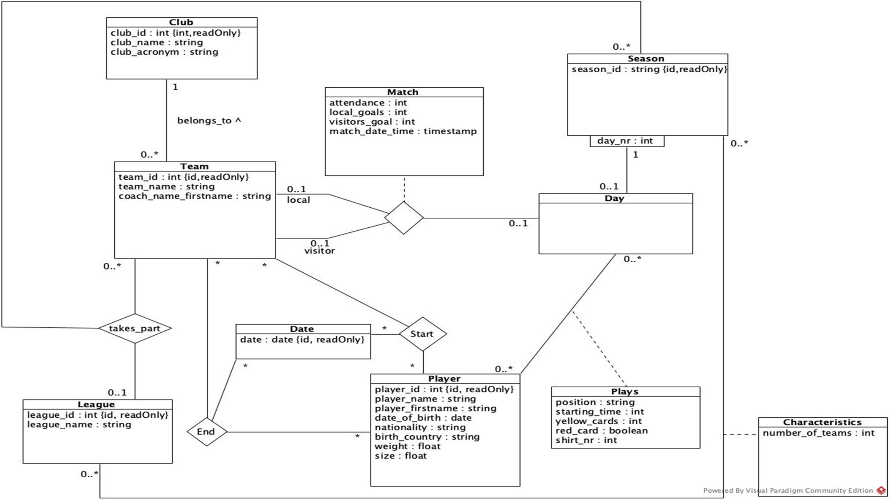

Présentation du projet
Ce projet consistait à concevoir et implémenter une base de données pour la gestion des résultats des championnats de football en France, aussi bien masculins que féminins. L'objectif était de mettre en pratique les concepts fondamentaux de modélisation de bases de données, d'identification des dépendances fonctionnelles et d'implantation en SQL.
Il s'inscrit dans le cadre de la compétence "Concevoir et mettre en place une base de données" et plus spécifiquement l'apprentissage critique "Mettre à jour et interroger une base".
Informations clés
- Module : S1.04
- Compétence : Concevoir et mettre en place une base de données
- Apprentissage critique : Mettre à jour et interroger une base
- Langage : SQL
- Organisation : Travail en binôme
- Durée : 3 semaines
- Livrables : Rapports PDF, diagrammes UML, script SQL
Étapes du projet
Analyse
Conception
Implémentation
Validation
